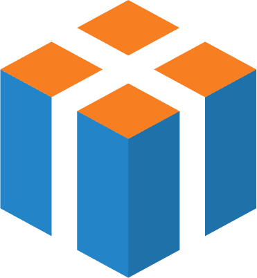

<ion-header class="ion-no-border srx-shadow">
  <ion-toolbar>
    <!-- Left Section -->
    <ion-buttons slot="start" *ngIf="!ableBack && ableSearch">
      <ion-button (click)="gotoHome()" class="np">
        
      </ion-button>
    </ion-buttons>

    <ion-buttons slot="start" *ngIf="ableBack">
      <!-- Back -->
      <ion-button class='backButton' (click)="backHandler()" color="secondary">
        <ion-icon slot="icon-only" name="arrow-back-outline"></ion-icon>
      </ion-button>
    </ion-buttons>

    <ion-title color="dark" class="maven-font medium-text font-weight-bold" *ngIf="!ableSearch && title.length > 0" [innerHtml]="title">
    </ion-title>

    <div class="search-bar scroll" [class.ml-3]="!ableBack" (click)="gotoSearch()" *ngIf="ableSearch">
      <ion-button class="search-icon no-ripple" fill="clear" shape="round" color="secondary">
        <ion-icon name="search"></ion-icon>
      </ion-button>
      <p>{{ searchPlaceholder }}</p>
    </div>

    <ion-buttons slot="end">
      <!-- Cart -->
      <ion-button (click)="gotoCart()" color="secondary">
        <ion-icon slot="icon-only" src="../../../assets/icon/cart.svg"></ion-icon>
        <span class="cart-badge" *ngIf="totalActiveCart > 0">{{ totalActiveCart }}</span>
      </ion-button>

      <!-- Notification -->
      <ion-button (click)="gotoNotification()" color="secondary" *ngIf="ableNotification">
        <ion-icon slot="icon-only" src="../../../assets/icon/bell.svg"></ion-icon>
        <span class="cart-badge" *ngIf="totalActiveNotif > 0">{{ totalActiveNotif }}</span>
      </ion-button>

      <!-- Share -->
      <ion-button color="secondary" (click)="onShare.emit()" *ngIf="ableShare">
        <ion-icon class="header-icon" slot="icon-only" src="../../../assets/icon/share.svg"></ion-icon>
      </ion-button> 

      <!-- Filter -->
      <ion-button color="secondary" (click)="onFilter.emit()" *ngIf="ableFilter">
        <ion-icon class="header-icon" slot="icon-only" name="funnel-outline"></ion-icon> 
      </ion-button> 

      <!-- Homepage -->
      <ion-button (click)="gotoHome()" *ngIf="ableHome">
        
      </ion-button>
    </ion-buttons>
  </ion-toolbar>
</ion-header>